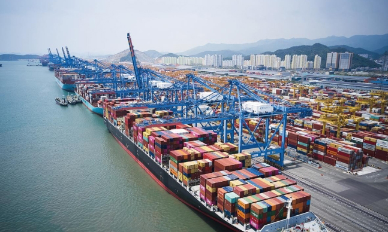
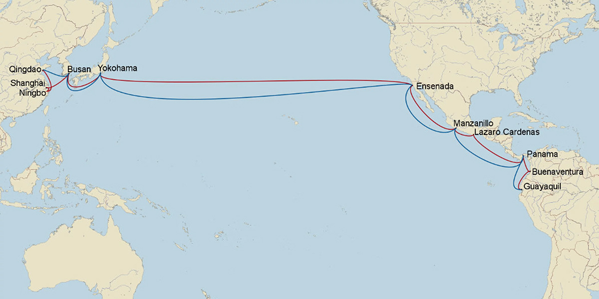

Para conocer más sobre el mercado de Corea del Sur,
visite nuestra página de Aprendizaje en Línea
y mire el Curso 9, "Logística".
Logística
Logística Marítima

* Fuente : Yonhap News
El Puerto de Busan es el segundo puerto de transbordo más ocupado del mundo y el séptimo puerto de contenedores más grande, manejando el 76.6% de la carga doméstica de contenedores en 2022. Así, el Puerto de Busan es el puerto más grande de Corea y un importante centro global de transbordo.
Es un puerto de gran capacidad, con un volumen de contenedores de 21.91 millones de TEU anuales en 2022, y un centro logístico del Noreste de Asia conectado con 500 puertos en alrededor de 150 países a través de la operación de más de 179 viajes semanales.
Considerando su gran capacidad de servicio de carga, así como su ubicación conveniente para el acceso desde las Américas, la ruta de transporte marítimo y la estimación de costos entre Centroamérica y Corea del Sur se basarán en establecer el Puerto de Busan como destino.
Las rutas de transporte marítimo desde Centroamérica a Corea suelen seguir caminos similares, con puertos principales que requieren transbordos en lugares como México o Panamá. No existe una opción de envío directo, excepto desde Panamá.
Las rutas de envío desde los países centroamericanos hacia Corea del Sur se muestran en la figura a continuación. Además, cuando se transporta desde las Américas hacia el noreste de Asia, es habitual que el primer destino sea Yokohama, Japón, y luego a los destinos en Corea del Sur y China.
Se necesita al menos 2 puertos, y el tiempo de envío desde los puertos de Centroamérica al puerto de Busan, Corea, varía entre 29 y 62 días.
Rutas de Envío desde Centroamérica hacia Corea del Sur

El costo de envío estándar para un contenedor de propósito general de 40' (GP) es mínimo 643 USD y máximo 2,841 USD, mostrando que hay una gran diferencia en los costos de transporte dependiendo del país y la compañía de transporte. Además, un contenedor refrigerado de 40’ cuesta un mínimo de 4,145 USD y un máximo de 5,595 USD y hay algunas rutas y compañías en ciertos países donde no están disponibles los contenedores refrigerados.
Considerando las fluctuaciones de precios, comuníquese con las siguientes compañías navieras para solicitar nuevas cotizaciones de envío: